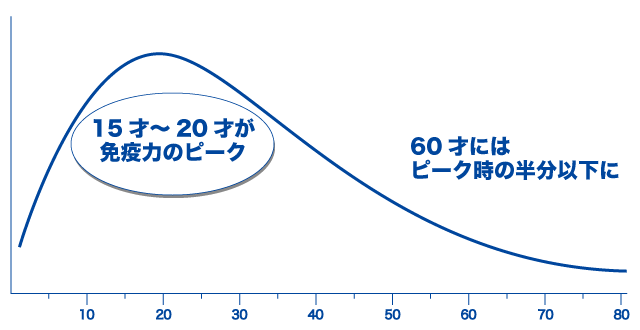
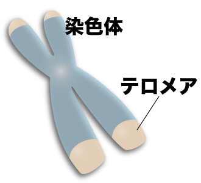
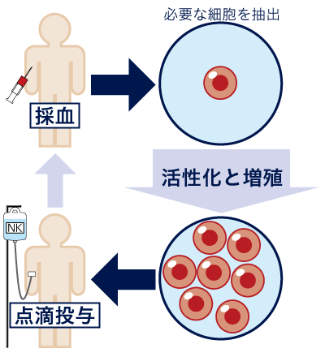

简体中文
简体中文


健康を維持する具体例
これらは若さを保つうえでも重要。美容にも良い!!
しかし、長続きしない事も…
そこで重要になるキーワードが…NK細胞
NK（ナチュラルキラー）細胞は免疫細胞のひとつで、がん細胞やウイルスに感染した細胞などを自分で見つけ排除する事が可能な細胞です。体内をパトロールする細胞です。
このNK細胞を強化したり、増やすことで免疫力が上昇し、健康を維持する事が可能です。
また、古くなり弱まった細胞を除去するのもNK細胞などの免疫細胞が関係しているので、免疫力を上げるのは美容にも効果的という事が言えます。

そもそも免疫力は20才ぐらいをピークに下降します。
年を取るにつれ、風邪を引きやすくなったり病気がちになるのは免疫力が衰えている証拠です。
免疫力の低下に加え、体も老化します。
老化の原因の一つにテロメアの存在があります。

テロメアは染色体の末端の構造部分の事を挿し、細胞分裂の回数を決めていると言われています。
テロメアが短くなってくると細胞が分裂を止めてしまいます。
細胞が新しく生まれ変わらない事で、古い細胞が居座り、機能だけが衰えていくのです。
これが老化です。
こうした古い細胞を排除するのに必要なのが免疫細胞であり、NK細胞なのです。
では、体内のNK細胞を増やすには…
医療機関が行うNK細胞の増やし方、活性化方法は…

採血によるNK細胞の抽出！NK細胞を活性化し増やす！点滴で体内へ投与！
がん治療として行ってきた活性NK細胞療法の技術はそのままに!
免疫力を高めたい! 疲れた体を何とかしたい! がんを予防したい!
長く健康でいたいという方に当院の活性NK細胞療法がお勧めです！
STEP
ちょっと気になる…
医療機関として大規模な培養センターを持つ当院では、頂いた血液を速やかに培養が出来る様、クリニック部門と培養センター部門が連携し徹底した管理下で行います。
同じビル内に培養センターを設置する事で、液体や点滴などの受け渡しを速やかに行なう事が出来、発送時間などのタイムロスを大幅に削減しています。
美容や健康に良いのはＮＫ細胞だけではない！
私達の体にとても必要な栄養素の一つ…ビタミンＣ
コラーゲンの生成や他の栄養素の吸収に必要
ビタミンＣはとても重要な栄養素にもかかわらず、経口でしか摂取できません。
実は経口でしか摂取できないのは、ヒトや一部のサル、モルモットだけで、他の動物は体内でビタミンＣを生合成できると言われています。
それでも、人が経口でビタミンＣを摂取しても得られる効果は必要最低限のみと言われています。
そこでお勧めなのが、高濃度ビタミンＣ点滴です！
静脈から有効成分を直接体内へ入れるため、血中濃度が上昇し、成分が効率的に働くのです。
高濃度ビタミンＣ点滴を美容と健康のベースアップに！！
ほとんどの方で投与が可能ですが、Ｇ6ＰＤ欠損症の検査(13,000円)を行わせて頂きます。
※日本人でＧ6ＰＤ欠損症を発症する方はほとんどいない症状です。
投与は点滴で約１時間ほどです。
治療前、治療後などには今の体の状態をチェックする事も重要です。
尿で出来る簡単ながんリスク評価です
私達の体は、食生活の乱れや寝不足、疲労、喫煙、紫外線などにより体が衰え、免疫力などが低下し様々な病気になります。
これらの免疫力低下の要因は酸化ストレスと呼ばれ、体内で活性酸素などを発生させ、私達の身体の60兆個もある細胞のDNAにダメージを与えるのです。
DNAにダメージを受けた細胞は、修復機能によって正常化されます。
その際にダメージを受けたDNAは細胞の外へ排出され、血液などを循環し、最終的に尿として排出されます。
その不要になったDNAというのが8-OHdGというDNAです。
8-OHdG(8-hydroxy-2'-deoxyguanosine)は酸化ストレスマーカーと呼ばれ、尿中に含まれる濃度を測定する事で、日々の生活の中でどれだけストレスを受けているのかという指標に使われています。
濃度が薄ければストレスは低い事を意味し、高く出れば、それだけ日々の生活の中でストレスを受けていることになります。
8-OHdGは細胞のDNAが修復される過程で不要となったDNAで、主にストレスが原因となって放出されるDNAです。
死んだ細胞から放出されたDNAです。
がん組織や炎症組織は細胞死が盛んに起こっている為、がん患者さんや炎症性疾患患者さんの血液中などに多く含まれているDNAです。